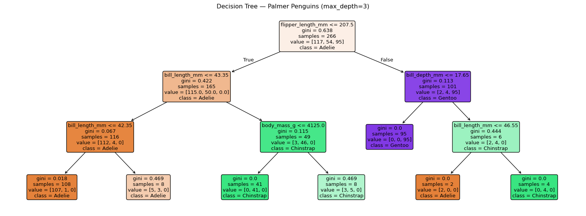

# Load libraries
import pandas as pd
import matplotlib.pyplot as plt
import seaborn as sns
from sklearn.tree import DecisionTreeClassifier, plot_tree
from sklearn.model_selection import train_test_split
from sklearn.metrics import classification_report
# Load the dataset
penguins = sns.load_dataset("penguins")
# Remove rows with missing values for simplicity
penguins = penguins.dropna()
# Select numeric features and target
features = ["bill_length_mm", "bill_depth_mm", "flipper_length_mm", "body_mass_g"]
X = penguins[features]
y = penguins["species"]
# Split into training and test sets (80 / 20)
X_train, X_test, y_train, y_test = train_test_split(
X, y, test_size=0.2, random_state=42, stratify=y
)Decision Trees
Imagine you are trying to identify a penguin species in the wild. You might ask yourself a series of questions: How long is its bill? How heavy is it? Where was it spotted? Each answer narrows down the possibilities until you arrive at a conclusion. This is exactly how a decision tree works.
A decision tree is a supervised machine learning model that learns a sequence of yes/no questions about the input features, and uses the answers to predict an output — a class label (classification) or a numeric value (regression). Decision trees are one of the most intuitive models in machine learning: their logic can be read and understood by anyone, even without a statistics background.
How Does a Decision Tree Learn?
At each step, the tree picks the feature and threshold that best separates the data into purer groups. “Purity” is measured by the Gini impurity:
\[ G = 1 - \sum_{k=1}^{K} p_k^2 \]
where \(p_k\) is the proportion of samples belonging to class \(k\) in a given node. A Gini score of 0 means the node is perfectly pure (all one class); a score of 0.5 (for two classes) is maximally impure.
Intuition: At each split, the algorithm tries every possible feature and threshold, calculates the weighted average Gini impurity of the two resulting child nodes, and picks the split that reduces impurity the most. This is called the Gini gain.
Building a Decision Tree in Python
1. Load and prepare the data
2. Train the model
# Choose the model
clf = DecisionTreeClassifier(max_depth=3, random_state=42)
# Fit the model
clf.fit(X_train, y_train)DecisionTreeClassifier(max_depth=3, random_state=42)In a Jupyter environment, please rerun this cell to show the HTML representation or trust the notebook.
On GitHub, the HTML representation is unable to render, please try loading this page with nbviewer.org.
DecisionTreeClassifier(max_depth=3, random_state=42)
Setting max_depth=3 keeps the tree small and readable — we will revisit this parameter in the Overfitting & Pruning section.
3. Evaluate
# Evaluate the model with unseen (test) data
y_pred = clf.predict(X_test)
print(classification_report(y_test, y_pred)) precision recall f1-score support
Adelie 0.97 0.97 0.97 29
Chinstrap 0.81 0.93 0.87 14
Gentoo 1.00 0.92 0.96 24
accuracy 0.94 67
macro avg 0.93 0.94 0.93 67
weighted avg 0.95 0.94 0.94 67
A well-tuned tree on this dataset typically achieves >95% accuracy, because the three penguin species are quite well-separated in the feature space.
Visualising the Tree
One of the greatest strengths of decision trees is that you can draw them and read off the exact logic the model uses.
fig, ax = plt.subplots(figsize=(16, 6))
plot_tree(
clf,
feature_names=features,
class_names=clf.classes_,
filled=True, # colour nodes by majority class
rounded=True,
ax=ax
)
plt.title("Decision Tree — Palmer Penguins (max_depth=3)")
plt.tight_layout()
plt.savefig("penguin_tree.png", dpi=150)
plt.show()
Each node in the diagram shows: - The splitting rule (e.g. flipper_length_mm ≤ 206.5) - The Gini impurity of that node - The number of samples that reach it - The majority class (indicated by colour)
Reading the tree from top to bottom, you can follow the exact path a new penguin would take to reach a prediction.
Example path: A penguin with
flipper_length_mm = 195goes left at the root →bill_depth_mm ≤ 17.0→ goes right → predicted Chinstrap.